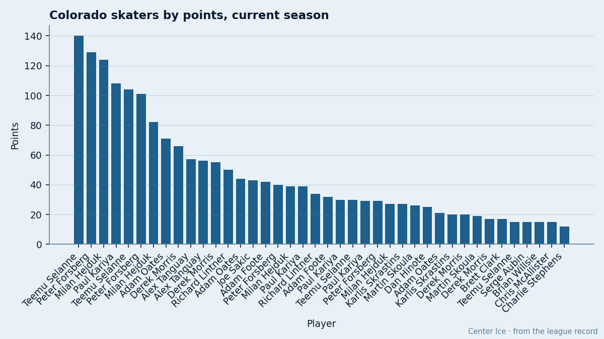
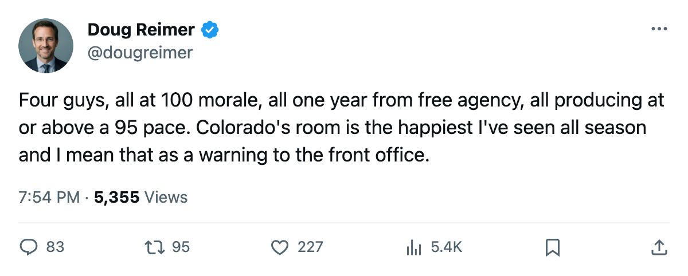
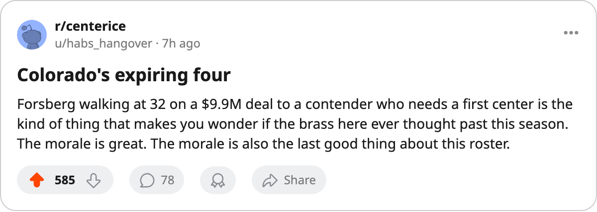

100 Morale, 1 Year Left, $29.45M Between Them: Colorado's Top Four All Walk in June
The 2nd-happiest room in hockey has the 2nd-highest payroll and no answer for what happens when its four best scorers hit the market on the same day.
 Doug ReimerAnalytics editor, ex-video coach · The Slot Report
Doug ReimerAnalytics editor, ex-video coach · The Slot Report
 Peter Forsberg95 is at 100 morale.
Peter Forsberg95 is at 100 morale.  Paul Kariya89 is at 100.
Paul Kariya89 is at 100.  Milan Hejduk88 is at 100.
Milan Hejduk88 is at 100.  Teemu Selanne86 is at 100. All four carry one-year deals and played 23 games for
Teemu Selanne86 is at 100. All four carry one-year deals and played 23 games for  Colorado Avalanche this season, the full schedule. The club's average morale sits at 98.0, behind only
Colorado Avalanche this season, the full schedule. The club's average morale sits at 98.0, behind only  Vancouver Canucks at 99.0.
Vancouver Canucks at 99.0.
The method here is simple: take the Contract Ledger's expiring class, filter to the club with the 2nd-highest morale average, sort by salary, and look at what leaves together.
| player | pos | age | salary | overall | gp | pts | pace | morale |
|---|---|---|---|---|---|---|---|---|
| Peter Forsberg | LW | 32 | $9.90M | 95 | 23 | 29 | 103 | 100 |
| Paul Kariya | LW | 31 | $10.11M | 89 | 23 | 30 | 107 | 100 |
| Teemu Selanne | RW | 35 | $6.94M | 86 | 23 | 15 | 100 | |
| Milan Hejduk | RW | 29 | $2.50M | 88 | 23 | 27 | 96 | 100 |
Four men. $29.45M in combined salary. Three of the four sit in the scoring leaders' top 30 with a 96 pace or above. The cost per point for the club as a whole sits at $2.55M, the 7th-worst in the league on a $66.24M payroll that trails only  New York Rangers.
New York Rangers.
The room is fine. The roster is not guaranteed.
Colorado's average morale of 98.0 is the 2nd-highest reading in the Bureau's Morale Scale. The gap between 98.0 and the median club at 92.3 is more than five points. All four expiring players hit the ceiling on that scale.
No Colorado player appears on the Bureau's Development Index, risers or fallers. The form picture says these four are exactly where their Book grades place them and nothing is about to change.

What the injury ledger does not explain
Colorado Avalanche has carried 17 injury spells and 92 days lost this season.  Adam Foote86 appears three times on the repeat list.
Adam Foote86 appears three times on the repeat list.  Jamie Storr83 has two spells. The top four, the ones with expiring deals, each show a single unnamed spell on the ledger but played every game.
Jamie Storr83 has two spells. The top four, the ones with expiring deals, each show a single unnamed spell on the ledger but played every game.
A player who misses time on an expiring deal has less leverage. None of these four have missed time in a way the league recorded as a named body part. They are healthy, at 100 morale, producing at or above their base grade, and they know what they are worth in July.
The business case for keeping them
The club generated $24.21M in profit this season on $50.70M in revenue, with 14,538 per game at $82 a ticket. $24.21M in profit does not cover $29.45M in departing salary if all four re-sign at market. It does not come close.
The payroll table gives the starting point: $66.24M with the four still on it. Remove them and the floor drops to $36.79M. Fill that gap with players who produce at a comparable pace on new deals and the per-point figure moves the wrong way. Leave it unfilled and the top line becomes a 77-overall center in  Adam Oates77 at 24 games played and 21 points.
Adam Oates77 at 24 games played and 21 points.
What the rest of the roster looks like after
The contract-year class table gives the best 30 expiring skaters league-wide. Only those four carry Colorado jerseys. The next-highest Colorado player on the overall list among those with years remaining is  Joe Sakic88 at 88, who has 4 years left at $9.40M. Sakic has 7 games played and 7 points in limited action this season.
Joe Sakic88 at 88, who has 4 years left at $9.40M. Sakic has 7 games played and 7 points in limited action this season.
The Development Index has nothing to say about Colorado. The Bureau sees no improvement coming from the players who stay, and no decline from the ones leaving.
The question for the front office
Forsberg at 32, Kariya at 31, Selanne at 35, Hejduk at 29. Three of four are past their peak. Selanne will be 36. The room is the 2nd-happiest in hockey because these men are playing every game, scoring at their rate, and have no reason to be unhappy. December is not the problem. July is, when all four walk out the door at once and the payroll drops from $66.24M to $36.79M with nothing in between.
Colorado has 59 games left. The four have 29, 30, 15 and 27 points in 23 games. If that pace holds, they produce 360 points over a full season on $29.45M combined. The next-cheapest top-four unit in the league is not close.

